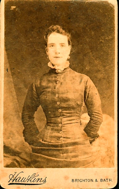
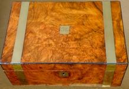
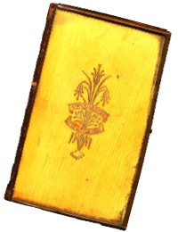

Rose Brimble

In 1861 when Rose was about 5 her father was gone and her mother Ann was working as a dressmaker. Four of the girls were living with her in Gray’s Inn Lane, St. Pancras, London. In 1871 Rose was 15 and still a student. She was visiting in Shoreditch on the night of the census. In 1881 Rose was working for Brimble and Allaine, importers and wholesale manufacturers of stays and materials and special importers of Werley’s corsets at 25 Cheapside, London. Edward Brimble was Rose’s uncle. He had been a warehouseman who invented a new type of corset stay and patented it in 1855. He made enough money to go into business. At the time Rose was working for him she was lodging with Isabel Hosach in Islington.
I imagine Francis and Rose met in London as they were both working in the same type of business. Francis and Rose were already engaged when he came to Australia and the marriage was already arranged when she arrived aboard “The Orient” on the 2nd June 1884. They married on the 9th June 1884. Francis had established himself in business in Woollahra and all was good.
Rose gave birth to Gladys in 1885 and Doris in 1890. Gladys died young when she was 8 years old and life became harder for the family. Francis became an alcoholic and died when Rose was 44 years of age. Rose was living at 39 Stafford Street Paddington when she died at 60 from pernicious anaemia and exhaustion.

![What you should know
Rose Brimble was born on the 7 June 1855 at 47 Lion St., Clerkenwell, London, England. She was the daughter of William Brimble, a carpenter from Somerset (born in Wiltshire) and Ann Brain a dressmaker from Bath, Somerset. She was the youngest of 6 girls.
In 1881 she was a saleswoman in a wholesale warehouse and lodged at 88 Windsor Road, Islington, London.
Rose emigrated on the 2 June 1884 and married Francis Lewis 1 week later in Woollahra, Sydney.
She died in Paddington, Sydney on 2 October 1911 and was buried at Waverley Cemetery the next day.](Rose_Brimble_files/shapeimage_4.png)



